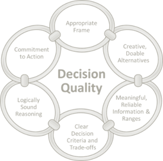

|  |
London Decision Quality Conference 2018 Making Good Outcomes More Likely |
|
The London Decision Quality Group, European Decision Professionals Network and Society of Decision Professionals are
convening a multi-industry conference in London this year, under the
theme.
The two-day Decision Quality Conference 2018. Global experts share practical guidance on improving business
decision making.
|
|
|
Geological Society London
Burlington House, Piccadilly, Mayfair, London, England, W1J 0BD
Dates: Conference: 5th & 6th November 2018 Short-course: 7th November 2018
|
|
|
Day 1: Monday 5th November
8:00 Registration 9:00 Welcome
9:15 What is DQ & why it is important? CarlSpetzler, CEO Strategic Decisions Group
10:15 Break
10:45 Implementing DQ in BP Russell Smith, VP Global Concept Developments – Global Projects Organization, BP
11:15 Defining an Appropriate Frame for Decision-Making: What problem are we trying to solve? What’s the best way of going about that? Dr Cath Bishop, Olympic Rower, Leadership Consultant & Speaker
12:45 Lunch and Software Roadshow
14:00 Avoiding Common Pitfalls of Designing Creative, Doable Alternatives Jeremy Brann, Head of Economic Excellence, Shell Exploration & Production
14:30 Data Science and Decision Analysis as two complementary perspectives: A case study from AstraZeneca James (Jim) Weatherall, Head of the Advanced Analytics Centre, Global Medicines Development, AstraZeneca
15:00 Break
15:30 Understanding corruptions in your thinking and decision making – Mitigating cognitive biases Dominic Britain, Principal at Dominic Brittain and Associates AlisonNurton, Associate at Dominic Brittain and Associates
17:30 Building a community – Evening event
Day 2: Tuesday 6th November
9:00 Introduction
9:15 Be Clear About Your Goals Reidar Bratvold, Professor Petroleum Investment and Decision Analysis, University of Stavanger and the Norwegian Institute of Technology
10:15 Break
10:45 Logical and correct reasoning : When your only tool is a hammer, everything looks like a nail Ellen Coopersmith, Founder Decision Frameworks
11:30 Commitment to Action: To decide or not to decide… Ray Riddoch, Managing Director UK, Senior Vice President Europe, Nexen Petroleum U.K. Ltd
12:15 Lunch and Software Roadshow
14:00 Solving a real problem JohannesSolzbach, Clustermarket; Barrie Rooney, Trozon; Charles Kirby, Dynium; Mark Weber, Grazer
15:00 Embedding DQ: Panel session Panel includes: Colin McGill, title, BP; CraigPaveley, VP UK Developments, Nexen Petroleum UK; Jim Weatherall, Head of the Advanced Analytics Centre, Global Medicines Development, AstraZeneca
16:15 Wrap up
16:30 Close
|
|
|
London Decision Quality Conference 2018 Abstracts
|
|
|
What is DQ and why is it important? Carl S. Spetzler, CEO and Chairman, Strategic Decisions Group |
|
|
DQ is such a powerful framework for the creation of value that many decision professionals speak about their "conversion experience”. We adopt DQ as our lens for addressing virtually all decision situations. And, as decision professionals we bring our expertise to specific decisions, to the design of decision processes, to the training of decision makers, and to developing organizational capability that makes DQ part of the culture. Carl will share some highlights of his five decades of bringing DQ to many decision makers and organizations.
|
|
|
Implementing DQ in BP Russell Smith, VP Global Concept Developments – Global Projects Organization, BP
|
|
|
BP employs DQ in two key areas: the sub-surface, particularly to justify data acquisition and in projects; this latter area is the focus of this talk. BP’s Global Project Organization (GPO) is focused on delivering safe, cost effective and competitive projects for the upstream business – we typically deliver 5-8 major projects per year.
The Global Concept Development group (GCD) inside GPO is responsible for helping choose the portfolio of future opportunities that BP will develop and for creating the most competitive concept for each selected opportunity. This talk will describe how BP uses Decision Quality to help with both these areas.
BP has found determining the main decisions a project needs to make is the key to developing workplans and ensuring that integrated teams remain focussed on producing the optimum value. Using Business Framing has proved a powerful way of determining these key decisions. Moreover, inviting partners and government agencies into these workshops has been key in gaining alignment from the start of the process.
Later in the project, simple but effective tools such as Concept Decision Matrices and Decision Quality Scoring are used to compare options and assess the quality of our decisions. Together with the Business Framing workshops, these have delivered transparent value-based decisions that hold throughout the life of the project.
|
|
|
Defining an Appropriate Frame for Decision-Making – What problem are we trying to solve? What’s the best way of going about that? Dr Cath Bishop, Olympic Rower, Leadership Consultant and Speaker |
|
|
Defining the problem that is to be solved and clarifying the process for doing so is an essential part of every important decision and one that can often be skipped over too quickly. It is easy to begin looking for a solution and jumping to conclusions before even understanding the problem that needs to be solved.
In a complex business where parameters can change constantly and large numbers of people can be involved, establishing greater clarity over the problem that needs solving is crucial to avoid heading off in the wrong direction or in too many different directions, and to ensure that everyone understands the basic ‘exam question’ that is being asked of them before plunging ahead.
In this presentation, Cath will draw on her experiences as an Olympic rower, former senior diplomat and now leadership consultant to demonstrate how our mindset, assumptions and biases affect how we define a problem. This will be an interactive session that brings to life the opportunities and challenges of ensuring we have correctly identified the purpose and scope of what we want to achieve, the way in which we want to go about achieving that, which includes fully understanding the different perspectives that others can bring.
|
|
|
Avoiding Common Pitfalls of Designing Creative, Doable Alternatives Jeremy Brann, Head of Economic Excellence, Shell Exploration & Production |
|
|
It has been said that decisions only exist when you have two or more alternatives to choose from. In a two-alternative example, a decision only exists if both alternatives are actually doable and aligned with problem statement objectives, metrics, and decision criteria. In life, as in business, decisions often fall prey to the perception of creative, doable alternatives when no such alternatives have been defined.
This discussion will focus on two examples of the need to identify alternatives that are aligned with objectives, metrics, and decision criteria to yield fruitful results. The first example highlights a difficult task often undertaken in personal life: helping a teenager make a high-quality decision dealing with college choices. While not an uncommon task, this example has the twist of dealing with university athletics in the United States.
The second example deals with manufacturing choices for a new technology in the oil and gas industry. The oil price crash in 2008 led to some seemingly difficult choices in the Research and Development space. Upon closer inspections, not all the decisions were truly decisions as the framing and analysis processes never truly yielded creative, doable alternatives. Supplier contracts, schedule delay risks, and previous "givens” appeared to constrain the solution space. Reframing and refocusing on "doable” alternatives helped break down barriers to project success.
The discussion will address the need to push the boundaries of creativity within the walls doability, thereby yielding a set of truly "mutually exclusive and collectively exhaustive” alternatives. Only by ensuring a set of viable alternatives exist can true Decision Quality be achieved.
|
|
|
Data Science and Decision Analysis as two complementary perspectives: A case study from AstraZeneca James (Jim) Weatherall, Head of the Advanced Analytics Centre, Global Medicines Development, AstraZeneca |
|
|
Exponentially increasing drug development costs and ever-greater pressure on healthcare budgets, along with the complexity inherent in modern clinical trial design has compelled pharmaceutical companies to reconsider their modes of operation and decision-making processes. AstraZeneca has recognised Data Science (DS) and Decision Analysis (DA) as two complementary approaches to future proof its decision-making practices.
While they have a common objective to improve decision making the starting point of the disciplines tends to be different. DA places the human decision maker at its centre while DS focuses on what data is available to feed into computerised algorithms, which ultimately act in support of a human decision maker, or perhaps enable fully automated decision making. DS is becoming progressively more widespread in pharmaceuticals & healthcare, as well as many other sectors. Examples include the use of machine learning to predict beneficial response to treatment, neural networks that are proven to be more accurate than physicians at correctly evaluating medical images, and the state-of-the-art analytical capability is used analyse the constant real-time stream of data originating from patients’ wearable devices.
AstraZeneca has combined its DS and DA capability in a single department – the Advanced Analytics Centre, recognising that the different perspectives provided by DA and DS give rise to synergies which have the potential to greatly enhance corporate decision making.
Data scientists and decision analysts have been working closely together on some of the most pressing problems faced by AstraZeneca. Using advanced analytics and related methods DS maximises the potential of data by creating crucial insights. DA creates structure around the decision situation, complements data with expert opinions using rigorous elicitation techniques and leads the design & deployment of decision models.
|
|
|
Understanding corruptions in your thinking and decision making – Mitigating cognitive biases Dominic Britain, Principal at Dominic Brittainand Associates AlisonNurton, Associate at Dominic Brittainand Associates |
|
|
This interactive workshop aims to help participants understand how cognitive biases corrupt thinking and decision making, and explore techniques to mitigate their effects. At the end of the session, participants should have a good grasp of •the
role of cognitive biases in corrupting thinking and decisions;
•a
concrete methodology to typify cognitive biases;
•the
biases participants might have; and
•specific
techniques to help them mitigate those biases.
Participants not familiar with cognitive biases should visit https://cognitivebiassolutions.com/cognitive-bias-solutions-overviewahead of the conference.
|
|
|
Be Clear About Your Goals Reidar Bratvold, Professor Petroleum Investment and Decision Analysis, University of Stavanger and the Norwegian Institute of Technology " If you don’t know where you’re going, any road will get you there." Lewis Carroll |
|
|
It is impossible to choose rationally the best course of action in any given situation without having a clear idea of what the decision is intended to achieve. Therefore, an absolute prerequisite for rational decision-making is to ask, consider, and respond to questions such as: What are the real reasons behind making this decision? What do you fundamentally want to achieve? How do you define ‘value’ in the decision context? How will you assess or evaluate achievement? Are you clear about the priorities when there are multiple goals?
The purpose of the Clear Values and Tradeoffs dimension in the Decision Quality chain is to help define in a clear and explicit manner the decision problem that should be addressed and to stimulate creative thinking in modelling the decision throughout the decision process. Quoting Ralph Keeney, there are three primary ways that being clear about values and tradeoffs can lead to better decisions. First, it often results in a better set of objectives for evaluating the alternatives. Second, a value focus facilitates the creation of alternatives, some of which might be better than the readily apparent alternatives that have been previously recognized. Third, a value focus proactively defines decision opportunities that are more attractive to face than the decision problems forced upon us.
Objectives articulate the stated values more specifically and in a coherent manner focused on decision making. In evaluating what we want, we often find that we want multiple, often competing objectives. The mathematics of Multiple Objective Decision Analysis (MODA) is a powerful way to quantify the values, assess the tradeoffs, and evaluate the alternatives. This technique is appropriate when we have conflicting objectives, complex alternatives, and major sources of uncertainty.
In this talk, we will illustrate and discuss the relevance and practical applicability of the key concepts involved in choosing values and tradeoffs that are often missing in other approaches. We will also use real-world examples to discuss the challenges and opportunities in applying these concepts.
|
|
|
Logical and correct reasoning : When your only tool is a hammer, everything looks like a nail Ellen Coopersmith, Founder Decision Frameworks |
|
|
Our goal with Decision Quality is to reach clarity of action through sound insight. This may not require full probabilistics for every decision evaluation. Rather, what we seek is an efficient means to understand the impact of the various options under consideration, only adding rigor when necessary to understand the tradeoffs. From common operational decisions to full strategic decisions, this session discusses different types of evaluation approaches and the insight they can bring to different types of decisions.
|
|
|
Commitment to Action: To decide or not to decide… Ray Riddoch, Managing Director UK, Senior Vice President Europe, NexenPetroleum U.K. Ltd |
|
|
For the last few years, CNOOC Nexen’s UK business has been developing its Decision Analysis capabilities in order to improve quality of its decisions. The programme includes training of senior leaders on what a quality decision actually is, creating a cadre of local DA practitioners and changing processes to include DA tools.
However, have a good decision process is not enough – if we can’t commit to action and effectively execute the decision then the "best” alternative is nothing more than potential value.
In this presentation, I will talk about a number of examples as well as what as I expect to see as a decision maker. I will also discuss the advantages of having regular dialogue between decision makers and the project team to ensure there is an agreed frame to make sure we are solving the right problem, we consider a range of viable alternatives and ultimately build commitment and a plan for implementation.
|
|
|
Solving a real problem JohannesSolzbach,Clustermarket; Barrie Rooney, Trozon; Charles Kirby, Dynium; Mark Weber, Grazer |
|
|
Start-ups are no different to any other business facing big, important choices. What may be different is that start-ups face these sorts of decisions with great regularity. Like what is our value proposition, who are our customers, how do we radically improve our product? They face these decisions in the absence of a portfolio of established products, a fat bank account, brand, or established customer base, so getting it wrong could be the end of the venture. Four start-ups will present a dilemma they currently face and ask the conference for help on approach, ideas and content or analogues. The start ups invited for this event are •Clustermarket led
by Johannes Solzbach;
creation of a digital market place to optimise use of lab-space
•Trozon led
by Barrie Rooney; a non for profit with as aim to provide radically low cost
tropical disease diagnostics with initial focus on Chagas
•Dynium led
by Charles Kirby; creating the ‘brains’ for autonomous tractors that increase
yields, target use of pesticides at lower costs
•Grazer
led by Mark Weber; A Sat-Nav for
Learning; a new type of learning experience for a digital world
|
|
|
Embedding DQ: Panel session Panel includes: Colin McGill, title, BP; CraigPaveley, VP UK Developments, NexenPetroleum UK; Jim Weatherall, Head of the Advanced Analytics Centre, Global Medicines Development, AstraZeneca |
|
|
What are the benefits of embedding a Decision Quality (DQ) approach to decision making in your company? How do different companies do this, what have they found works (or does not work) and why? Why should other companies consider embedding DQ? In this session, a variety of organisationswill take part in a panel discussion on these important topics and discuss their journeys and learnings. |
|